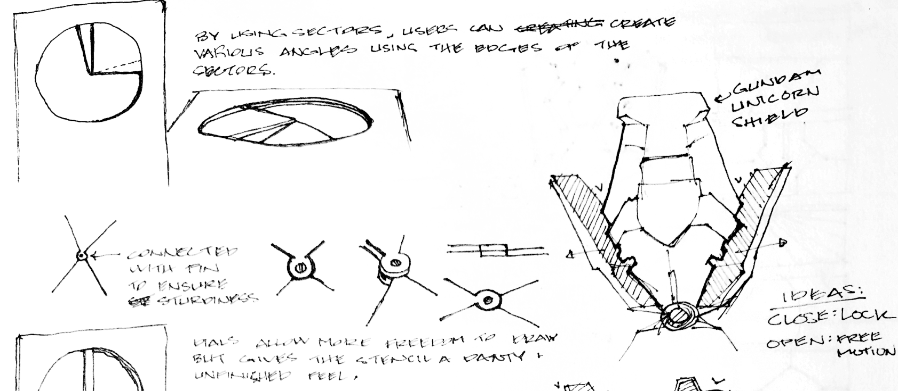

I’ve never been one to color inside the lines. When I was 4 years-old, I was given a coloring book and crayons on a flight for a family vacation. Rather than scribbling all over the illustrations, I found myself so intrigued by the shapes and designs that I redrew them wherever there was blank space on the page. Ever since that day, I taught myself how to draw and became very observant of the world around me. My creativity grew constantly, making art and learning a big part of me. No matter what direction life decided to take, I always found myself steering towards art, learning, and creation.
From cartoon shows I loved, I redrew my favorite characters; styling them with different hair and clothing. Weapons and armors that showed up in video games would be inspiration for me to create my own. My love for the way things were designed got me into collecting clothing tags at a young age, just to study and admire their aesthetic appeal. By the time I started going to school, I made invitations for birthdays, banners for classrooms, learn to sew by hand to make shirts/clothing for myself, and even studied a bit of HTML to ‘design’ my own little website. Design became my teacher in life.
After high school, I made the decision to attend Pratt Institute and study architecture, something that allowed me to design and be creative in impactful ways. For days, I dreamt (and sketched) buildings that would one day bring many people together in positive ways. So I packed my bags and flew across the country to be surrounded by architectural history in a city that oozes design at every corner. It was in NYC where I began to understand design beyond aesthetics. From there, I learned how to brave the world in different perspectives, think critically, ask better questions, and how to approach them in multiple ways. But most of all, I learned what true design is really all about: problem solving. One problem I couldn’t solve, however, was how to continue paying for college. After four successful months at Pratt Institute, I had to return home due to the financial constraint it put on my family.
Upon returning home, I was lost on exactly what I wanted to pursue, but I kept on doing the one thing I knew how: create. Every chance I could, I would design something, whether it was skateboards, shirts, languages, book covers, games, you name it! One day, while juggling some creative ideas with a cousin, I made the suggestion to start a magazine. Despite not knowing what we were getting ourselves into, we figured doing it online was the least risky way to go. While my cousin pondered about specific writing topics, I couldn’t help but think about how I wanted to design the site. After much research on how to truly build a website from scratch, I found the world of UX Design. The discovery was serendipitous, because everything I read reminded me of my eye-opening experience at Pratt Institute. This was my second shot at pursuing a design career. I eventually found an apprenticeship through Bloc to help me become the designer I always wanted to be. And the rest is history.